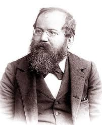
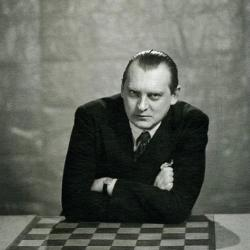

1. Wilheim Steinitz (1886-1894)

1886 - Wilhelm Steinitz vs Johannes Zukertort
Skor: Steinitz 12½ - 7½ Zukertort
1889 - Wilhelm Steinitz vs Mikhail Chigorin
Skor: Steinitz 10½ - 6½ Chigorin
1892 - Wilhelm Steinitz vs Mikhail Chigorin
Skor: Steinitz 12½ - 10½ Chigorin
1894 - Wilhelm Steinitz vs Emanuel Lasker
Skor: Steinitz 7 - 12 Lasker
2. Emanuel Lasker (1894-1921)
1894 - Wilhelm Steinitz vs Emanuel Lasker
Skor: Lasker 12 - 7 Steinitz
1896–97 - Emanuel Lasker vs Wilhelm Steinitz
Skor: Lasker 12½ - 4½ Steinitz
1907 - Emanuel Lasker vs Frank Marshall
Skor: Lasker 11½ - 3½ Marshall
1910 - Emanuel Lasker vs Carl Schlechter
Skor: 5 - 5 Schlechter(Ünvanını korudu)
1921 - Emanuel Lasker vs José Raúl Capablanca
Skor: Capablanca 9 - 5 Lasker
3. Jose Raul Capablanca(1921-1927)
1921 - Emanuel Lasker vs José Raúl Capablanca
Skor: Capablanca 9 - 5 Lasker
1927 - José Raúl Capablanca vs Alexander Alekhine
Skor: Alekhine 15½ - 10½ Capablanca
4. Alexander Alekhine(1927-1935)

1927 - José Raúl Capablanca vs Alexander Alekhine
Skor: Alekhine 15½ - 10½ Capablanca
1935 - Alexander Alekhine vs Max Euwe
Skor: Euwe 15½ - 14½ Alekhine
5. Max Euwe(1935-1937)
1935 - Alexander Alekhine vs Max Euwe
Skor: Euwe 15½ - 14½ Alekhine
1937 - Max Euwe vs Alexander Alekhine
Skor: Alekhine 15½ - 9½ Euwe
Alexander Alekhine(2. Dönem)(1937-1946)
1937 - Max Euwe vs Alexander Alekhine Skor: Alekhine 15½ - 9½ Euwe
6. Mikhail Botvinnik(1948-1957)
1948 - Botvinnik, Keres, Reshevsky, Smyslov, Euwe (Turnuva)
Kazanan: Mikhail Botvinnik
1951 - Mikhail Botvinnik vs David Bronstein
Skor: Botvinnik 12 - 12 Bronstein (Ünvanını korudu)
1954 - Mikhail Botvinnik vs Vasily Smyslov
Skor: Botvinnik 12 - 12 Smyslov (Ünvanını korudu)
1957 - Mikhail Botvinnik vs Vasily Smyslov
Skor: Smyslov 12½ - 9½ Botvinnik
7. Vasily Smyslov(1957-1958)
1957 - Mikhail Botvinnik vs Vasily Smyslov
Skor: Smyslov 12½ - 9½
1958 - Vasily Smyslov vs Mikhail Botvinnik
Skor: Botvinnik 12½ - 10½ Smyslov
Mikhail Botvinnik(2. Dönem)(1958-1960)
1958 - Vasily Smyslov vs Mikhail Botvinnik
Skor: Botvinnik 12½ - 10½ Smyslov
1960 - Mikhail Botvinnik vs Mikhail Tal
Skor: Tal 12½ - 8½
8. Mikhail Tal(1960-1961)
1960 - Mikhail Botvinnik vs Mikhail Tal
Skor: Tal 12½ - 8½
1961 - Mikhail Tal vs Mikhail Botvinnik
Skor: Botvinnik 13 - 8
Mikhail Botvinnik(3. Dönem)(1961-1963)
1961 - Mikhail Tal vs Mikhail Botvinnik
Skor: Botvinnik 13 - 8 (Botvinnik ünvanını geri aldı)
1963 - Mikhail Botvinnik vs Tigran Petrosian
Skor: Petrosian 12½ - 9½ Botvinnik
9. Tigran Petrosian(1963-1969)
1963 - Mikhail Botvinnik vs Tigran Petrosian
Skor: Petrosian 12½ - 9½ Botvinnik
1966 - Tigran Petrosian vs Boris Spassky
Skor: Petrosian 12½ - 11½ Petrosian
1969 - Tigran Petrosian vs Boris Spassky
Skor: Spassky 12½ - 10½ Petrosian
10. Boris Spassky(1969-1972)
1966 - Tigran Petrosian vs Boris Spassky
Skor: Petrosian 12½ - 11½ Spassky
1969 - Tigran Petrosian vs Boris Spassky
Skor: Spassky 12½ - 10½ Petrosian (Ünvanı kazandı)
1972 - Boris Spassky vs Bobby Fischer
Skor: Fischer 12½ - 8½ Spassky
11. Robert James(Bobby)Fischer(1972-1975)
1972 - Boris Spassky vs Bobby Fischer
Skor: Fischer 12½ - 8½ Spassky
1975 - Bobby Fischer vs Anatoly Karpov
Sonuç: Fischer oynamayı reddetti; Karpov doğrudan şampiyon ilan edildi.
12. Anatoly Karpov(1975-1985)
1975 - Bobby Fischer vs Anatoly Karpov
Sonuç: Fischer oynamayı reddetti; Karpov doğrudan şampiyon ilan edildi.
1978 - Anatoly Karpov vs Viktor Korchnoi
Skor: Karpov 16½ - 15½ Victor Korcnoi
1981 - Anatoly Karpov vs Viktor Korchnoi
Skor: Karpov 11 - 7 Korcnoi
1984 - Anatoly Karpov vs Garry Kasparov
Sonuç: Maçlar FIDE tarafından süresiz askıya alındı.
1985 - Anatoly Karpov vs Garry Kasparov
Skor: Kasparov 13 - 11 (Kasparov kazandı)
1986 - Garry Kasparov vs Anatoly Karpov
Skor: Kasparov 12½ - 11½ (Kasparov kazandı)
1987 - Garry Kasparov vs Anatoly Karpov
Skor: 12 - 12 (Beraberlik, Kasparov unvanını korudu)
1990 - Garry Kasparov vs Anatoly Karpov
Skor: Kasparov 12½ - 11½ (Kasparov kazandı)
13. Garry Kasparov(1985-2000)
1984 - Anatoly Karpov vs Garry Kasparov
Sonuç: Maç 48 oyun sonra FIDE tarafından süresiz askıya alındı.
1985 - Anatoly Karpov vs Garry Kasparov
Skor: Kasparov 13 - 11 Karpov
1986 - Garry Kasparov vs Anatoly Karpov
Skor: Kasparov 12½ - 11½ Karpov
1987 - Garry Kasparov vs Anatoly Karpov
Skor: 12 - 12 (Kasparov unvanını korudu)
1990 - Garry Kasparov vs Anatoly Karpov
Skor: Kasparov 12½ - 11½ Karpov
2000 - Garry Kasparov vs Vladimir Kramnik
Skor: Kramnik 8½ - 6½ Kasparov
14. Vladimir Kramnik(2000-2007)
2000 - Garry Kasparov vs Vladimir Kramnik
Skor: Kramnik 8½ - 6½ Kasparov
2006 - Vladimir Kramnik vs Veselin Topalov (Birleştirme Maçı)
Skor: Kramnik 8½ - 8½ (Tie-break ile Kramnik kazandı)
15. Viswanathan Anand(2007-2013)
2007 - Viswanathan Anand (Turnuva şampiyonu)
Sonuç: Anand bir turnuva formatında şampiyon oldu.
2008 - Viswanathan Anand vs Vladimir Kramnik
Skor: Anand 6½ - 4½ Kramnik
2010 - Viswanathan Anand vs Veselin Topalov
Skor: Anand 6½ - 5½ Topalov
2012 - Viswanathan Anand vs Boris Gelfand
Skor: Anand 6 - 6 Gelfand(Tie-break ile Anand kazandı)
2013 - Magnus Carlsen vs Viswanathan Anand
Skor: Carlsen 6½ - 3½ Anand
16. Magnus Carlsen(2013-2023)
2013 - Magnus Carlsen vs Viswanathan Anand
Skor: Carlsen 6½ - 3½
2014 - Magnus Carlsen vs Viswanathan Anand
Skor: Carlsen 6½ - 4½
2016 - Magnus Carlsen vs Sergey Karjakin
Skor: Carlsen 6 - 6 Karjakin(Tie-break ile Carlsen kazandı)
2018 - Magnus Carlsen vs Fabiano Caruana
Skor: 6 - 6 (Tie-break ile Carlsen kazandı)
2021 - Magnus Carlsen vs Ian Nepomniachtchi
Skor: Carlsen 7½ - 3½ Nepomniachtchi
17. Ding Liren(2023-2024)
2023 - Ian Nepomniachtchi vs Ding Liren
Skor: Ding 9 - 8 (Tie-break ile Ding kazandı)
2024 - Ding Liren vs Gukesh Dommaraju
Skor: Ding 6½ - 7½ Gukesh
18. Gukesh Dommaraju(2024-günümüz)

2024 - Ding Liren vs Gukesh Dommaraju
Skor: Ding 6½ - 7½ Gukesh